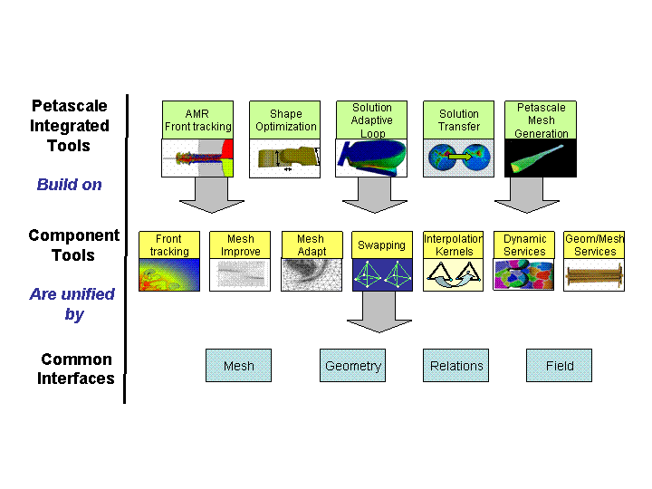

ITAPS Research
Research in the ITAPS center focuses on providing tools and technologies to increase the levels of interoperability of mesh-based methods for the analysis of PDEs and to fill specific technology gaps needed to increase the level of automation and reliability of these simulations.
We are pursuing a balanced approach of developing (i) interfaces to mesh-related data, (ii) services operating on those data, and (iii) the development of higher-level combinations of these services for specific applications. The research in SciDAC-2 is focused more toward the latter two areas, with a smaller effort on interfaces still evolving from SciDAC-1. In all cases we will work closely with the application teams to ensure that the services are relevant to their needs, are effectively deployed, and perform as expected.
The overall ITAPS research and development plan is summarized in the
image below. The ITAPS center impacts many different application
areas through the development of integrated services that build on
multiple component services and common interfaces for geometry, mesh
and field information. The application areas that we are
collaborating with rely on interoperability among various tools and
services delivered by ITAPS. For example, consider accelerator
modeling. In this case, integrated services that supply shape
optimization, petascale mesh generation and solution adaptive loops
are required to advance the state-of-the-art in accelerator cavity
modeling. Each of these integrated services depends on multiple
component services. For example, the parallel solution adaptive loop
depends on the atomic operations for mesh refinement and coarsening in
the mesh

Component Services
To support application needs, a number of component services must be developed. We will continue to develop critical tools for mesh quality improvement, deforming meshes, and adaptivity (both front tracking and h-refinement). In addition, we will develop new services that focus on geometry access and manipulation, parallel data services, interpolation, and r-adaptivity.-
Interoperable Mesh/Geometry Technologies. Our emphasis is the creation of common interfaces for existing ITAPS Center technologies that will allow them to interoperate with each other to provide fundamentally increased capabilities and to allow application scientists to easily switch among them. Our focus in the first year has been on low-level query operations for mesh access, the creation of CCA-compliant mesh components, and demonstrations of ITAPS tool interoperability on a one-to-one basis.
-
Mesh Curve Correction Building on our existing higher order mesh generation and modification technologies, we have constructed a mesh curving service to construct valid and well shaped curved elements.
-
Mesh Swapping. Mesh swapping improves the quality of unstructured simplicial meshes by changing the local topology of the mesh. We have created an interoperable mesh swapping tool that provides a full range of topological changes, in conjunction with a variety of quality metrics, including user-defined metrics.
-
Adaptive Loops. Adaptive methods are central to ensuring the reliability of the simulations used for SciDAC applications. An area of emphasis of ITAPS has been the development of an adaptive loop service that can be directly integrated with SciDAC analysis procedures to provide adaptive simulations that can greatly increase the reliability of the results obtained.
Front Tracking. We are developing a robust, accurate and efficient front tracking toolkit library for computation of dynamically moving front. This library can be loaded into any scientific application program which has the need to track a moving interface. We provide functionality for mathematical calculations with respect to the moving interface and coupling tools to link the interface to the interior regions bounded by the moving front.
-
Dynamic Services We are developing the dynamic parallel data services, such as parallel partitioning, dynamic load balancing, data migration, unstructured communication maps, and geometrically-based processor searches, which are crucial to petascale performance of mesh-based simulations.
-
VisIt Plugins Applications require the ability to visualize the data supported by the ITAPS data model and interfaces. We are developing plug-ins for the primary delivery vehicle of the SciDAC VACET Center, VisIt, that allows a user to visualization data from one or more ITAPS implementations.
-
iMesh IO While the iMesh implementations have long been interchangeable once the data was loaded into memory, the data load process itself was specific to each implementation. The iMeshIO service addresses this by providing access to a wide variety of scientific data via the iMesh interface.
Mesh Smoothing We are creating a new,stand alone mesh quality improvement toolkit that can be used with all ITAPS technologies. The primary aim of this project is to provide a freely available, comprehensive software package that would accommodate a number of different mesh element types, quality metrics, and state-of-the-art topology modification and node point movement algorithms.
Integrated Services
The component services described in the previous section can be used directly by applications, e.g. geometric evaluation tools in particle-in-cell applications and front tracking in fusion pellet injection simulations. However, these services can also be integrated to form higher-level mesh-related services. We propose to extend some of these services, and construct new ones, as described in the following links.-
Petascale Meshing We will develop parallel unstructured mesh generation has as a way of overcoming memory limitations of serial mesh generation for large meshes on petascale architectures.
p
-
Shape Optimization We are working to develop the mesh and geometry services needed to for shape optimization simulations on deforming geometries.
-
Parallel Adaptive Loop A parallel solution adaptive loop service is being developed to support accelerator modeling and fuison MHD modeling that work in conjunction with a CAD definition of the geometric domain so that as the mesh is refined its geometric approximation is automatically improved.
-
AMR Front Tracking We will continue to develop an adaptive front tracking technology and apply it to applications in groundwater, astrophysics, and gas dynamics.
-
Solution Transfer We will construct a parallel solution transfer service that transfers field data from one mesh to another by integrating ITAPS components for geometry and mesh sorting and searching, interpolation kernels, and implementations of the geometry, mesh, and fields interfaces.